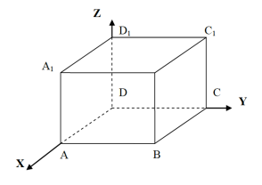

Билет № 24
- Назначение, применение и принцип работы алгоритма циклического.
Назначение: циклические алгоритмы используются для многократного выполнения одних и тех же действий при определённых условиях.
Применение: такие алгоритмы широко применяются в программировании — например, при обработке массивов, выполнении повторяющихся вычислений, автоматизации однотипных операций.
Принцип работы: в циклическом алгоритме задаются:
– начальные условия (инициализация);
– условие продолжения цикла (пока оно истинно, цикл выполняется);
– тело цикла (действия, выполняемые при каждой итерации);
– изменение управляющей переменной (например, счётчика).
Пример: цикл for в языке программирования Python:
for i in range(5):
print(i)
- В MS Word постройте чертеж:

-
Зайдите на сайт Российских железных дорог http://www.rzd.ru и найдите
информацию о расписании и наличии билетов на 30 декабря на поезда, идущие по маршруту Санкт-Петербург–Москва.
Скопируйте результат в текстовый документ. Оформите в виде таблицы. Выполните форматирование данной таблицы. Сохраните иллюстрации.
Расписание поездов Санкт-Петербург – Москва (30 декабря)
| № Поезда |
Время отправления |
Время прибытия |
В пути |
Тип поезда |
Наличие билетов |
| 752А «Сапсан» |
08:00 |
12:00 |
4 ч 00 мин |
Скоростной |
Есть |
| 002А |
10:30 |
18:25 |
7 ч 55 мин |
Фирменный |
Ограничено |
| 054Ч |
13:20 |
21:50 |
8 ч 30 мин |
Пассажирский |
Есть |
| 776А «Сапсан» |
17:00 |
21:10 |
4 ч 10 мин |
Скоростной |
Нет |